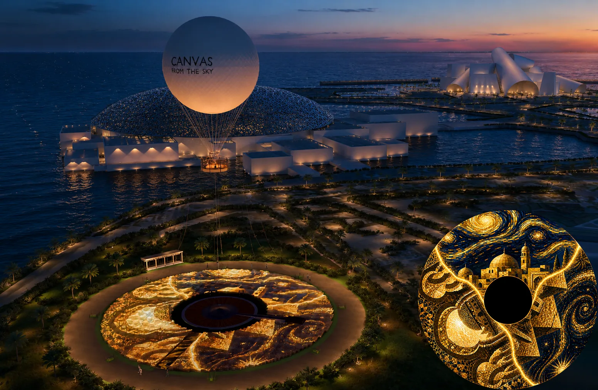
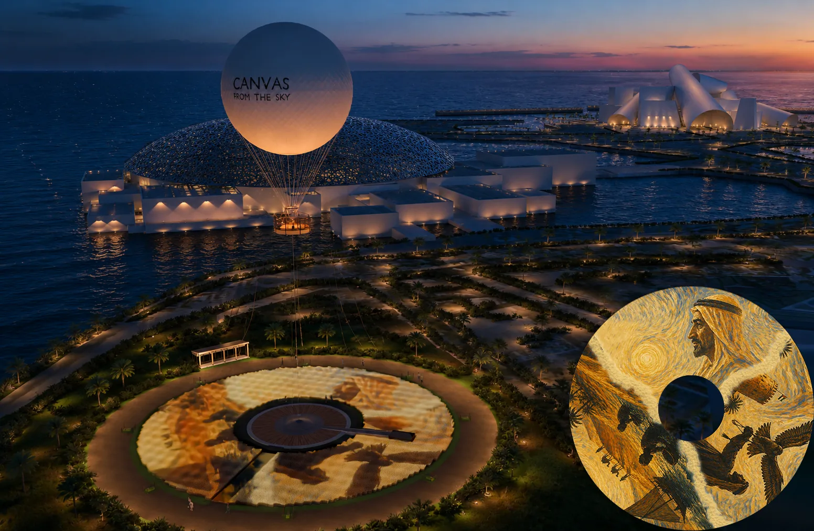
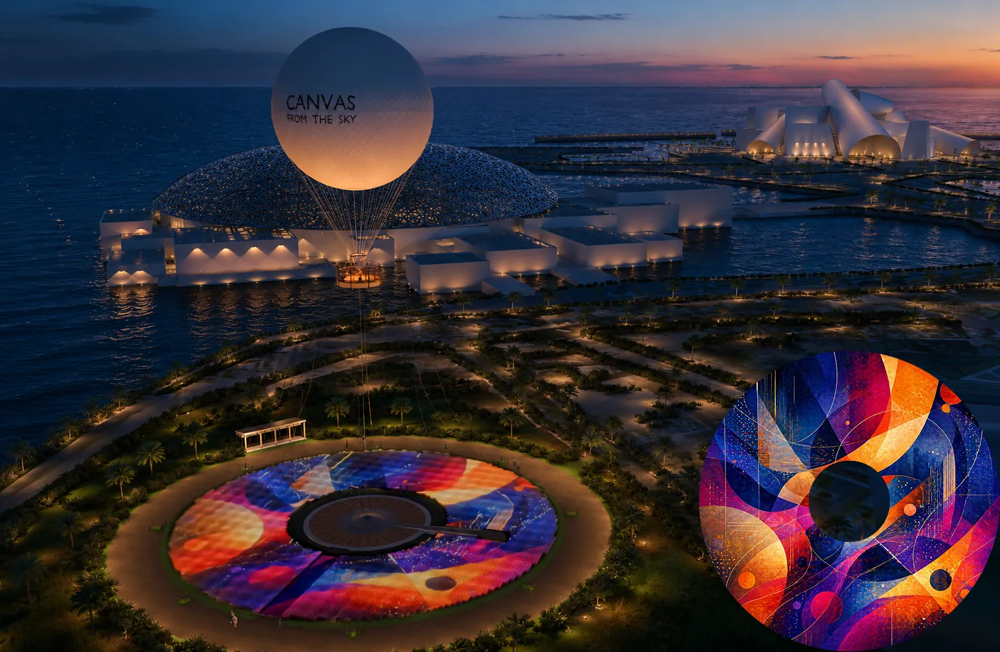
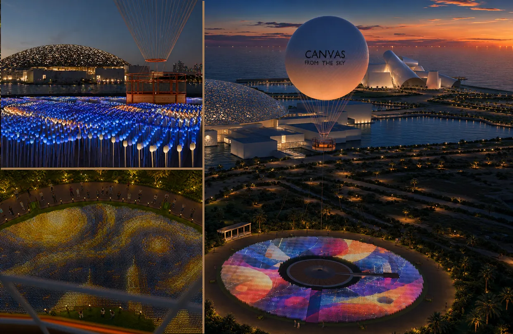
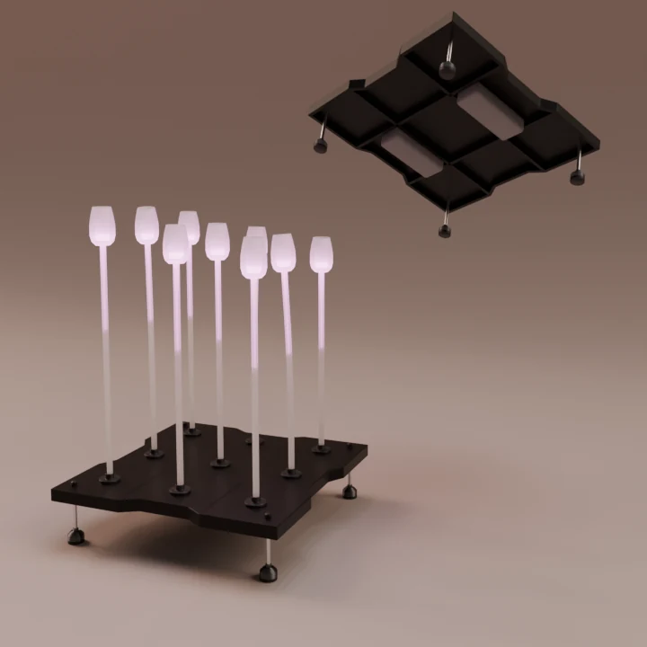

Canvas
From The Sky
The world's first programmable aerial canvas, above the cultural heart of Abu Dhabi.
The aerial connector
of Saadiyat's cultural spine.
A 60-meter programmable LED ring around Abu Dhabi's tethered balloon — turning a sightseeing ride into a full cultural night destination.
Ground sculpture by day, 60-meter aerial canvas by night. Guests walk through the living LED field before they board, and leave through it after the show.
Louvre, Zayed National Museum, and Guggenheim sit within sight on Saadiyat. Canvas is the one attraction that rises above all three and ties them in a single view.
Three distinct themed shows. The Night All-Access Pass (AED 695) captures all three in one evening at 2.4× the single-theme price — a natural upsell with built-in repeat-visit logic.
A complete story, every cycle.
From the LED field at your feet, through 150 metres of open sky, back to the full canvas show below — every cycle complete in twenty minutes.
Arrival & The Glowing Walkway
The experience begins before you board. A 3-metre glass walkway, LED-lit from beneath, leads through the living LED field to the boarding platform. 55,575 stems glow in tonight's theme around you. The show is already running.
Boarding & Ascent
The LED field dims under a rising animation as the gondola lifts at fifty metres per minute. The ring shrinks below you as Abu Dhabi opens up — the museums, the coastline, the skyline coming into frame in three minutes flat.
150m — Abu Dhabi in Every Direction
At 150 metres, the three Saadiyat museums lie below you, framed by the Gulf coastline and the Abu Dhabi skyline. The gondola holds for two and a half minutes. The LED ring glows as a small, perfect disc beneath — the calm before the show.
Descent — The Show Builds Below
The balloon descends 125 metres at forty metres per minute. As altitude falls, the LED canvas grows in resolution below the gondola — each stem and tulip head becoming distinct. Anticipation builds with every metre.
Main Show — 25m, Full Canvas
Held at 25 metres — the optimal viewing height for the full 60-metre ring. All 55,575 LED nodes at full output. The LED hallway closes in both directions so no movement shadows the canvas: a single uninterrupted seven-and-a-half-minute themed show, the ring filling the field of view below the gondola railing.
Photo Dwell & Exit
The show closes as the gondola lands at the platform. Guests step out and linger on the platform for photo dwell while the hallway resets for the next batch. Every cycle is self-contained, complete in twenty minutes, and the next group is already on its way in.

Every show is a different world.
Each Saadiyat museum has its own dedicated LED show. A guest who sees all three has experienced the full cultural story of the island.

The Universal Collection
Ancient civilisations, trade routes, global art history — rendered as warm gold Islamic geometric patterns, archaic relief motifs, and light that moves with the weight of history.

The Nation's Story
Falcon silhouettes, dhow boats, pearl divers, desert caravans — the founding story of the UAE, painted on the night sky in amber and burnt orange.

The Future Canvas
Vivid colour fields, generative geometry, cobalt and magenta — the show that asks what art can be when the canvas is 60 metres wide and visible from a kilometre in every direction.
The canvas behind the show.

A 60-meter ring built from 6,175 identical 600mm aluminum plate tiles, each carrying nine addressable RGBW stems. Designed from the first sketch to be serviced from above — no specialist crew, no crane, no downtime.
Each 600×600mm hard-anodised aluminum plate tile carries nine LED stems, height-adjustable 400–600mm. IP67 driver in a sealed cavity, accessible by suction grips in five minutes. Tulip diffuser heads — the only consumable — hand-pull replaceable in two minutes, no tools. Heat-rated, sand-sealed, built for the UAE climate.
One specification. One investment.
The investment carries a single aluminum plate tile specification: lighter to handle, precision-machined, refinishable, and built around the locked 9-LED content pipeline.

Aluminum Plate Tile
- 8mm 6061-T6 hard-anodised aluminum plate
- 4× 316SS heavy-duty adjustable corner feet
- ~14 kg per tile · one-hand lift, no crane
- Precision-machined · refinishable
- 20–30 year structural life
Balloon line is hardware and reassembly only. Regulatory approvals, GCAA certification, and permit costs are borne by Abu Dhabi as project-host concession and sit outside investor CAPEX.
Underwritten with discipline.
The underwriting floor. A cautious 32% ramp-up load on 250 operating days — embedding a deep cushion vs. the Base Case underwriting target, with a ~32% weather and downtime buffer baked in. 11 day rides per 3-hour morning window plus 16 batches per night, with modest sponsorship and limited museum cross-sell. A resilience case, not the target operating year.
The underwriting case. 58% steady operating load on 250 operating days — both assumptions sit below the steady-state target, embedding a ~32% weather and downtime buffer and a 12-point load discount as structural cushion. 11 day rides (16-min cycle at 150 m) plus 16 night batches across a 5.5-hour window, with the night revenue stack live, optional LED-field dwell, and practical sponsor and museum participation.
The upside case. 73% load on 250 operating days — closing the load discount while still absorbing the same conservative ~32% weather and downtime buffer. Stronger night-show demand, sponsor renewals, better All-Access uptake, and selective VIP bookings.
| Revenue Stream | Conservative | Base Case | Strong |
|---|---|---|---|
| Day ticket revenue | AED 3.7M | AED 6.8M | AED 8.5M |
| Night ticket revenue | AED 8.3M | AED 15.0M | AED 18.8M |
| F&B & retail | AED 0.4M | AED 0.9M | AED 1.4M |
| Sponsorship — content + branding | AED 0.7M | AED 1.6M | AED 2.2M |
| Museum partnership & cross-sell | AED 0.1M | AED 0.4M | AED 0.5M |
| Private gondola & VIP events | AED 0.4M | AED 0.8M | AED 1.0M |
| Total Annual Revenue | AED 13.6M | AED 25.5M | AED 32.4M |
The Base Case is underwritten at 58% operating load on 250 operating days — both assumptions sit deliberately below the steady-state target, embedding a ~32% weather and downtime buffer and a 12-point load discount as structural cushion. If actual operations deliver above either lever, 10-year IRR lifts by 5–12 points with no change to ticket price, CAPEX, or operating envelope. The Base Case is engineered to protect the downside, not chase the headline.
Force multiplier
for the whole island.
Canvas From The Sky is the aerial connector that gives Saadiyat a reason to stay from 9am through midnight. Every balloon ride becomes a museum referral. Every museum visit becomes a reason to come back after dark.
Louvre Abu Dhabi
Theme A is built around the Louvre's permanent collection. Balloon ticket holders receive 15% off Louvre admission; Louvre visitors receive 15% off any Canvas ticket.
Zayed National Museum
Theme B carries the Zayed NM's founding story into the night sky. The combined pass targets UAE nationals and cultural-tourism travellers who come for the founding story of the Emirates.
Guggenheim Abu Dhabi
Theme C is the Guggenheim's natural aerial extension — bold, abstract, electric — connecting the balloon experience to the international contemporary art market.
Balloon ticket holders get 15% off museum entry — and vice versa.
The structural shell outlives the business plan.
The investor is buying a precision aluminum structural shell designed for long service life. The most-exposed consumable — the tulip diffuser head — costs AED 66 and takes two minutes to replace with no tools.
| Component | UAE Service Life | Service Method | Type |
|---|---|---|---|
| Tulip diffuser head | 2–3 years · UV yellowing | Hand-pull from stem, snap new one. No tools. ~2 min. | Consumable |
| Stem assembly | 5–8 years · sand abrasion | Unscrew from tile socket. No tile movement. | Consumable |
| Driver electronics (per cell) | 7–10 years · thermal cycling | Lift tile with suction grips, swap driver, re-seat. ~5 min. | Periodic |
| Aluminum plate tile | 20–30 years structural | Lift out from above for refinishing or isolated replacement | Structural |
The GCC's leading premium aerial operator.
The only company in the region with proven expertise across both helium tethered and hot-air balloon operations — and the team that designed, launched, and operates the UAE's first permanent helium balloon attraction. GCAA certified, with a flawless safety record.
Full Turnkey Capabilities
- End-to-end operations, logistics, and staffing
- GCAA certification and ongoing regulatory compliance
- Crew training, safety protocols, and live emergency drills
- Ticketing systems and dynamic pricing strategy
- Helium supply chain and balloon envelope maintenance
Competitive Strengths
- Established government and authority relationships
- Proven tourism asset deployment across the GCC
- Operational readiness for immediate launch
- Award-winning brands with global visibility
- Only GCC operator with tethered & hot-air balloon expertise
"The only partner capable of delivering Canvas From The Sky safely, efficiently, and commercially successfully from day one."
The sky above
Saadiyat is ready.
A fully designed, engineered, and operationally credible aerial canvas — awaiting land allocation and co-investment to activate.